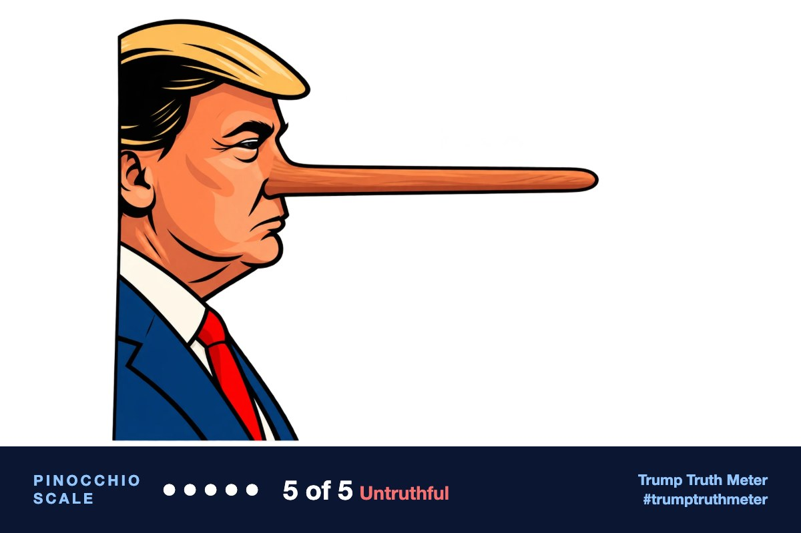

@realDonaldTrump · Oct 10, 2026, 10:02 PM ET · view on Truth Social
RT: https://truthsocial.com/users/realDonaldTrump/statuses/11741980685203011499% Approval Rating, highest ever. The Fake News never learns!
[Quoting @realDonaldTrump]
RT: https://truthsocial.com/users/realDonaldTrump/statuses/11741980685203011499% Approval Rating, highest ever. The Fake News never learns!
[Quoting @realDonaldTrump]

The post’s central claim of a 99% approval rating that is the “highest ever” is false. National polls and averages in early October 2026 put Trump’s job approval around 30–41%, near second-term and career lows, not a record high.
Editor’s note: All four reviewers correctly called the post untruthful self-praise: a 99% “highest ever” approval rating is not supported by any national poll. They differed on the origin of 99% (ChatGPT tied it to 2024 MAGA vote share; Grok to a ~98% MAGA-only CNN clip) and on exact tracker numbers. Those details do not change the verdict, because the post states 99% approval without any MAGA qualifier, and current national readings cluster around 30–41%, near lows rather than highs. Gemini’s unsourced range (30s–mid-40s, Republicans in the 80s–90s) is looser than the October 2026 surveys the others cited.
Written by Trump himself (78% confident)
The caption is Trump’s usual late-night superlative and Fake News jab; the attached Team Trump graphic is staff copy he is amplifying, not the words being rated as his own.